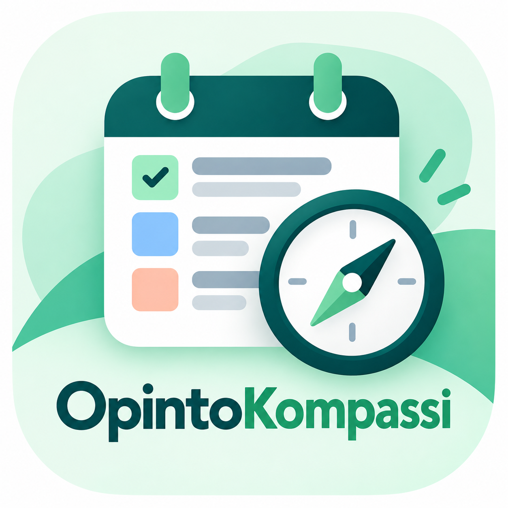

Uusi opiskelijapalvelu
OpintoKompassi tuo opiskelun tärkeät asiat yhteen paikkaan
Useita kursseja, päällekkäisiä määräaikoja ja tietoa monessa kanavassa? OpintoKompassi auttaa hahmottamaan opintojen kokonaisuuden ja suunnittelemaan opiskeluaikaa.

Vähemmän etsimistä, enemmän aikaa opiskeluun
OpintoKompassi kokoaa tehtävät, määräajat ja suunnitellut opiskelujaksot selkeään näkymään. Sen tavoitteena on helpottaa ajanhallintaa ja vähentää tunnetta siitä, että jokin tärkeä unohtuu.
Näin OpintoKompassi auttaa
- Tarkista tulevat tehtävät ja palautuspäivät.
- Avaa tehtävän tiedot yhdestä paikasta.
- Varaa opiskeluaikaa viikkokalenterista.
- Peruuta suunnittelu tai poista tallennettu suunnitelma tarvittaessa.
”Kun tehtävät ja määräajat näkyvät selkeästi, opiskelun suunnittelu tuntuu helpommalta.”— Palveluidean tavoitetta kuvaava esimerkkiajatus
Kokeile prototyyppiä
OpintoKompassi on kehitysvaiheessa oleva prototyyppi. Voit tutustua sen toimintoihin CampusConnectin palveluissa.